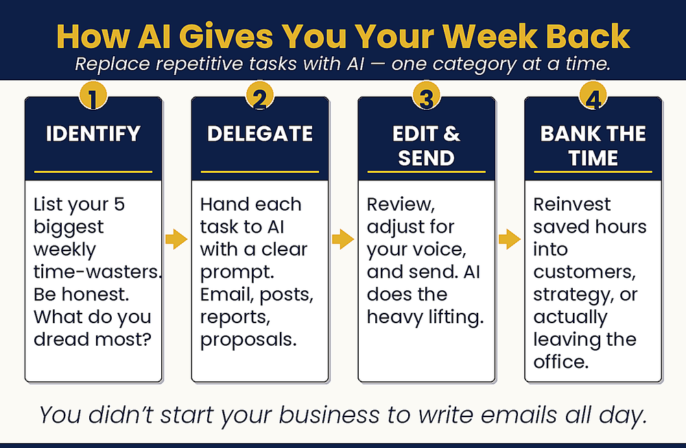

Let AI Do the Boring Stuff
How can I save time when I’m so busy?

Time is the one thing you cannot make more of. This chapter helps you win some back. Start with a quick time audit. Find the tasks that eat your week but do not need you. Those are the jobs AI can take off your plate. Email, scheduling, reports, and busywork are good places to start. Hand them off, and you can save around ten hours a week. That is time for the work only you can do.
1. Summarize Weekly Performance — paste your data first, then ask
Summarize last week’s performance in plain English. Flag anything unusual or worth my attention.
2. Replicate Your Workflow — match how you already do a task
Here is how I currently write a follow-up email: [describe your steps]. Replicate this process but faster.
Do the time audit right now. Make your list from yesterday. Label each item with a dollar sign, a star, or a clock. Add up the clock items. That is your AJJ opportunity. Then pick the single biggest clock item and identify which tool or approach from this chapter addresses it. Try it tomorrow before you do the task the old way.
Read the full chapter in AI Jiu-Jitsu → AJJbook.com
Prefer to have it set up for you? BreakThru Growth offers AI coaching and done-for-you setup for small businesses → BreakThruGrowth.com